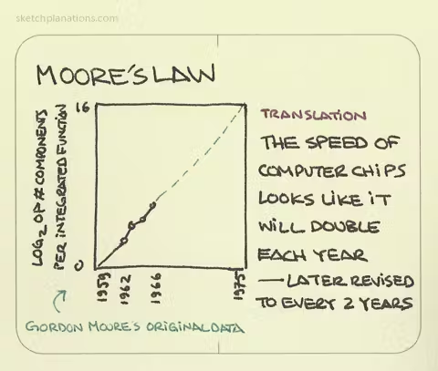
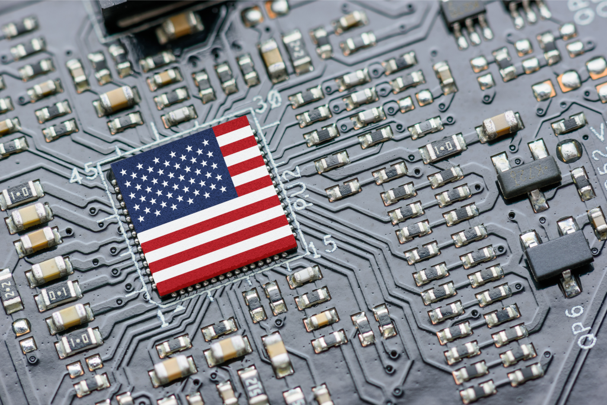
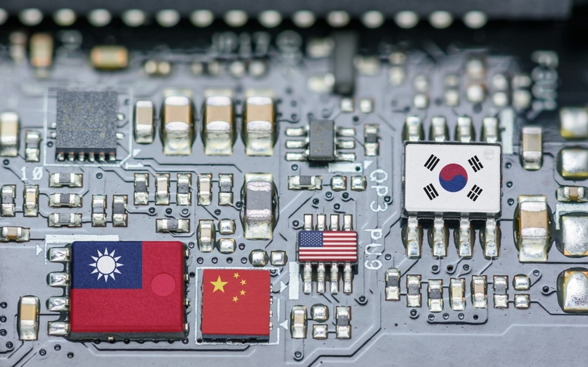

In 1961, Fairchild Semiconductor introducted a silicon chip with 4 transistors. These days Apple releases iphone with more than 11.8 million transistors.
And while microship industry was dominated by US and other distributed countries, China is trying to tip the scale and break free of this tech dependance they have on US.
Why do I say break free? BEcause in 1963, US semiconductor companies started shipping chips to Hong Kong for assembly. Fairchild (leader of this movement) initally paid its Hong Kong workers 25 cents an hour.
In 1965, Fairchild semiconductor co-founder Gordon Moore predicted that the maximum number of transistors on a single computer chip would double every year until 1975. His predicted growth rate in chip power, known as “Moore’s Law,” has proven true for more than 50 years.
After quitting Fairchild, Gordon Mooren and Bob Noyce founded Intel. in 1970, they developed DRAM chip (dynamic random access memory) and later the 4004, the first microprocessor.
After WW2, US government supported Japan to redevelop as the center of technology under an American-led system. However, when Japan surpassed the US in chip production in late 1980s, the US government (and through which Intel as well as other Silicon Valley companies) sought a way to reduce their dependency on Japan.
With South Korean govenrment pledging to invest $400 Million in its domestic chip industry, these American companies started arranging for Samsung to make chips under their brand names.
Businessman William Perry saw the potential in chip utilization in the army, and he pushed for improved weaponary like guided missiles through DARPA (the Defense Advanced Research Proejcts Agency).
DARPA later financed a program that enabled researchers at universities to design highly advanced chips, to "keep moore's law alive" towards sustaining military advantage.
America showcased the chip enhanced power of its military in the Persian Gulf War on January through their F-117 aircraft. The bombers used Sidewinder air-to-air missiles with semiconductor driven guidance systems that were six times more accurate than the Vietnam era version of the Sidewinder.
From 19060s, Taiwan aimed to join international supply chains for semiconductors and through this fortify its security arrangement with the US.
By the 1990s, the dazzling development of TSMC was well under way.
TSMC supported by the rich Taiwanese citizens and the govenrment also started attracting interest from other countries. At Researcher Morris Chang's urging, the Dutch semiconductor company Phillips acquired a 27.5% stake in TSMC.
With the chip fabrication shift to in Taiwan, Singapore, and South Korea, US was left with 13% of global chip fabrication in 2010, compared to 37% in 1990.
Intel researcher discovered the potential of extreme utraviolet light (EUV) in new types if lithography tools to make transistors even smaller.
However, as expected, Intel did not made its own EUV lithography tool. Neither did their japanese competitors. Thus, the Dutch company ASML became the sole producer of EUV lithography tools.
This is mainly due to the cost of building an advanced logic fab-- roughly around $20 billion.
With only a few firms being able to afford this, "Fabless" chip firms that design semiconductors and outsource the production to TSMC and other similar foundries have proliferated since 1980s.
Apple was an epitome of this outsourcing trend.
Finally, even though Intel had the capital to integrate EUV-based lithography into their foundry operations, they could not capitalize on it.
Therefore, Samsung and TSMC produce today's most sophisticated processors.
China is still dependent on chips and other products tech companies design in Silicon Valley. Even their army technologies uses chips from American companies like Intel and Nvidia.
However, China's government has a plan -- Made in China 2025. They aim to decrease chip reliance on US and increase domestic chip production.
Chinese state owns and finances many "private" equity investment firms, that constitute a collective effort to seize foreign chip firms.
Chinese telecom company Huawei is now among the three largest sellers of cell tower equipment.
Simultaneously while they break free from US chip dependance, China also invests in developing technologically sophisticated weapons like anti-ship missiles and anti-satellite weapons.
Because of this, Donald Trump when he was bresident banned exports of US chips to Huawei. This move ultimately forced Huawei to sell parts of its smartphone business.
With China dominating the EV industry with more affordable mass production, there is always chance if China rising as a serious power in chip industry.
Although miniaturization is still happening, the Moore's Law standard of doubling the components on a semiconductor chip every two years has been broken.